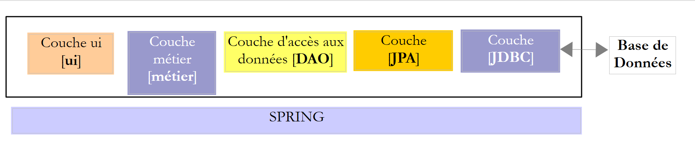
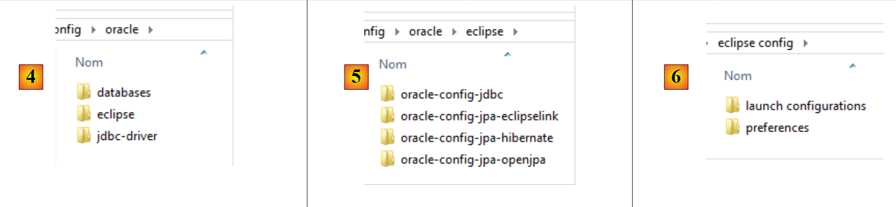

1. Introduction
The PDF for this document is available |HERE||.
The examples in this document are available |HERE|.
1.1. Contents
In this document, we propose to study different configurations for operating a database. Consider the following layered architecture:
 |
The execution flow goes from left to right:
- one of the classes in the [ui] layer (Use Interface) is executed first. It will instantiate the [metier] and [dao] layers. If the [ui] layer is a graphical interface, it then waits for user actions. A user action can trigger the execution of methods in all layers of the architecture down to the database. The result of these executions is returned to the user in one form or another;
The roles of the different layers could be as follows:
- The [JDBC] layer (Java DataBase Connectivity) is a universal database access interface. It always presents the same interface to the [DAO] layer. If SGBD is changed, it is sufficient to change the JDBC driver. The [DAO] layer does not change if certain rules have been followed. However, it is difficult to ensure 100% portability between SGBD versions because they often contain a significant amount of proprietary SQL code that is hard to ignore, as it often provides performance gains. As soon as proprietary SQL is used, portability to SGBD is no longer possible. Furthermore, SGBD implementations often have different policies for automatic primary key generation and reserved words that vary from one implementation to another. In this document, we have nevertheless succeeded in porting the studied JDBC architecture to six different SGBD instances by accepting that there is a configuration project for each of them;
- the [DAO] layer exposes an interface for accessing data from the specific database used (to be distinguished from the JDBC interface, which exposes methods valid for all SGBD instances);
- The [métier] layer implements the application's management rules or business rules.
- Its input data consists of data from the database via the [dao] layer and/or user data transmitted to it by the [ui] layer;
- it produces data that it can save to the database via the [dao] layer and/or return to the [ui] layer that queried it, for display to the user;
- The [ui] layer is the layer that executes the user’s actions and returns the results of those actions to the user;
Above, the [DAO] layer sends SQL requests to the [JDBC] layer for execution in the SGBD layer. In recent years (since 2006), this architecture has evolved as follows:
 |
It is now the JPA layer (Java Persistence API) that sends SQL requests to the JDBC layer and receives the results. The [JPA] layer presents operations to the [DAO] layer for persisting, modifying, deleting, and retrieving objects. The [DAO] layer no longer issues SQL commands. This approach is more portable because the JPA implementations handle the differences between SGBD, but it is slower than the JDBC technology. We will conduct performance tests to demonstrate this. The JPA technology formalizes the work done by the Hibernate [http://hibernate.org/] framework years ago.
We will examine two [DAO] layers using one of the following two architectures:
 |
 |
We will require the [DAO1] and [DAO2] layers to implement the same [IDAO] interface. Thus, the [JUnitTestsDao] test will be the same for both configurations and will allow us to compare performance. The [DAO1] layer will be implemented with Spring JDBC, and the [DAO2] layer with Spring JPA;
Once this is done, we will expose the [IDAO] interface on the web as follows:
 |
- In [1], the [IDAO] layer is exposed on the web through a [2] web layer implemented by Spring MVC. It is indeed the [IDAO] interface that is exposed, and we will build two versions of the web service depending on whether this interface is implemented with a [DAO-JDBC] or [DAO-JPA-JDBC] architecture;
- In [B], a remote client uses the URL exposed by the web service, which provide access to the methods of the [IDAO-serveur] layer. We will ensure that the [DAO-Client] [3] layer implements the [IDAO-serveur] [1] interface. This will allow us to use the same test [JUnitTestsDao], which has already been used twice ([4]);
- in [3], the [DAO-client] layer will be implemented with Spring RestTemplate;
Once this is done, we will secure access to the web service:
 |
- in [5], the client’s request HTTP passes through an authentication layer implemented with Spring Security;
Once this is done, we will evolve the previous architecture to the following:
 |
- In [3], the client application is itself a web application. It will present a form [5] that allows querying the URL of the secure web service. Access to the secure web service via HTTP will be handled by a [DAO-client-js] layer implemented in Javascript. This architecture implements what are known as cross-domain requests:
- the [2] web service presents URL requests of the form [http://machine1:port1/];
- the client web application [3] is downloaded from a URL [http://machine2:port2/]. If [http://machine2:port2/] is not identical to [http://machine1:port1/] (same machine, same port), then the client browser will block HTTP calls from the [DAO-client-js] layer. To resolve this issue, the web service must allow cross-domain requests. We will see how;
The projects presented have been tested with the following six SGBD versions:
- MySQL 5 Community Edition;
- SQL Server 2014 Express;
- PostgreSQL 9.4;
- Oracle Express 11g Release 2;
- IBM DB2 Express-C 10.5;
- Firebird 2.5.4;
For each of these SGBD, four different [DAO] layers have been developed:
- a layer implemented with Spring JDBC;
- a layer implemented with Spring JPA and the Hibernate provider JPA;
- a layer implemented with Spring JPA and the JPA EclipseLink provider;
- a layer implemented with Spring JPA and the provider JPA OpenJPA;
This presentation therefore covers a set of twenty-four different configurations. We have made a significant effort to factorize the code:
- most of the code is written only once. It is based on two Maven configuration projects:
- one configures the JDBC layer;
- the other configures the JPA layer;
 |
 |
The Maven configuration project for the JDBC [1] layer of a specific SGBD consists of two steps:
- importing the JDBC driver archive;
- defining the access credentials for the database being used and the various SQL commands that the [DAO1] layer will send to the JDBC driver. Although SQL is standardized, portability issues have arisen primarily due to the presence in queries of table/column names that turned out to be prohibited keywords in certain SGBD (table ROLES for DB2, column PASSWORD for Firebird). Furthermore, although a column name is normally case-insensitive (upper/lowercase), we encountered an issue with PostgreSQL regarding the ID column of the tables’ primary key. It wanted it to be named id in lowercase. These are typical examples of unexpected portability issues;
The three Maven configuration projects for the JPA and [2] layers of a specific SGBD also consist of two steps:
- importing the JPA implementation archive;
- configure the JPA implementation used for the specific connected SGBD. In fact, it is the JPA layer that sends the SQL commands to the JDBC layer. To be effective, it must know the SGBD in order to send it the SQL commands that it will recognize. These commands can use the SQL that owns this SGBD, as well as its specific characteristics (data types, sequences, triggers, procedures, automatic generation of primary keys, etc.);
We thus have twenty-four Maven configuration projects (4 configurations × 6 SGBD) on which all other database operation projects will be based. In the diagrams above, since the [DAO1] and [DAO2] layers offer the same interface, the 24 configurations of the two architectures above will be tested using a single [JUnitTestsDao] test class. Once these architectures have been verified, there are no further issues:
- the Maven project for publishing the database on the web is based on these two architectures. There are therefore also 24 possible configurations here;
- the Maven project for securing access to the web service builds on the previous project and also has 24 possible configurations;
- finally, the Maven project enabling cross-domain requests to the secure web service builds on the previous project and also has 24 possible configurations;
The study is conducted using SGBD, MySQL5, and the Hibernate implementation JPA. We then ported the code to the JPA Eclipselink and OpenJPA implementations. Then we port to the other databases (PostgresQL, Oracle, SQL Server, DB2, Firebird).
This course is intended for beginners. Most of the concepts used are explained. No prior knowledge of database programming or web programming is required. However, a solid understanding of the SQL language is necessary, as the SQL queries used are not explained.
To understand the examples, you need a basic knowledge of the Java language, which can be found in any introductory course on the language. The first two chapters of the document [Introduction au langage Java] will suffice. It is an old document (1998, revised in 2002) but the fundamentals are there. For a comprehensive course, one can read Jean-Marie Doudoux’s extensive book [http://www.jmdoudoux.fr/java].
This document is by no means exhaustive. It is intended only to provide a methodology and code that can be reused in similar contexts. The document has been written so that it can be read without a computer at hand. Therefore, many screenshots are included.
Although it does not cover all the capabilities of the Java language or all its areas of application, this document can be used as a learning resource for the language. By following this document—even if not in its entirety—the beginner reader will reach an “advanced Java” level in both the use of the language and the Spring framework. They can then continue their Java training with the following books:
- [Spring MVC et Thymeleaf par l'exemple] [http://tahe.developpez.com/java/springmvc-thymeleaf], which continues the exploration of the Spring ecosystem by introducing its "web programming" branch;
- [Tutoriel AngularJS / Spring MVC] [Introduction to Spring MVC and Thymeleaf through examples (2015)], which presents a client/server web architecture, where the client is implemented using the [AngularJS] framework and the server using [Spring MVC];
- [Introduction to Java EE with the NetBeans IDE and the GlassFish Application Server (2012)], which moves away from the Spring ecosystem to a web architecture based on JSF (Java Server Faces) and EJB (Enterprise Java Bean);
- [Introduction à la programmation des tablettes Android] [Introduction to Android Tablet Programming with Android Studio (2016)], which describes a client/server architecture where the client is an Android tablet and the server is a web service implemented by Spring MVC;
1.2. Sources
This document has two main sources:
- [ref1] : [Spring MVC et Thymeleaf par l'exemple] to URL [Introduction to Spring MVC and Thymeleaf through examples (2015)]. This document revisits the work done and presented in [ref1] using a different database. Simply put, it removes it from the context of web programming with Spring MVC. It is because I found that the code and methodology used in [ref1] to expose a database on the web were reusable that I decided to make a separate document out of it;
- [ref2] : [Persistance Java par la pratique] to URL [Java 5 Persistence Through Practice (2007)];
To learn more about Spring, you can use the following references:
- the Spring framework reference document [http://docs.spring.io/spring/docs/current/spring-framework-reference/pdf/spring-framework-reference.pdf];
- numerous Spring tutorials can be found at URL and [http://spring.io/guides];
- the [developpez.com] website dedicated to Spring [http://spring.developpez.com/];
- the [http://www.tutorialspoint.com/spring/spring_tutorial.pdf] tutorial;
Readers with insufficient knowledge of SQL can learn the basics with the book [Introduction au langage SQL avec le SGBD Firebird] at URL [Introduction to the SQL language with the Firebird DBMS (2006)].
1.3. Tools Used
The following examples have been tested in the following environment:
- Windows 8.1 Pro 64-bit machine;
- JDK 1.8 (section 23.1);
- IDE Spring Tool Suite 3.6.3 (section 1);
- Chrome browser (other browsers were not used);
- Chrome extension [Advanced Rest Client] (section 1);
- SGBD MySQL 5.6 Community Edition (section 23.4);
- SGBD SQL Server 2014 Express (paragraph 23.9);
- SGBD PostgreSQL 9.4 (section 23.7);
- SGBD Oracle Express 11g Release 2 (Section 23.6);
- SGBD IBM DB2 Express-C 10.5 (section 23.8);
- SGBD Firebird 2.5.4 (section 23.10);
- clients EMS Manager of its six SGBD (paragraph 23.5);
Note regarding JDK 1.8. One method in the case study uses a method from the [java.lang] package in Java 8.
Most of the examples are Maven projects that can be opened using either Eclipse, IntellijIDEA, or Netbeans. In the following, the screenshots are from the IDE Spring Tool Suite, a variant of Eclipse.
1.4. Examples
The examples are available at URL [Working with a relational database using the Spring ecosystem (2015)] as a downloadable ZIP file.
 |
- in [1], the example folders;
- in [2], the [spring-core] folder contains the Spring learning projects;
- in [3], the [spring-database-config] folder contains the configuration projects JDBC and JPA for the six databases;
 |
- in [4], the configuration for SGBD Oracle. It contains three folders:
- [databases] contains the SQL scripts for generating the two databases used by the document;
- [jdbc-driver] contains the Oracle driver JDBC as well as a script to install it in the local Maven repository;
- [eclipse] contains the four Oracle configuration projects:
- [oracle-config-jdbc] configures the JDBC access layer to SGBD;
- [oracle-config-jpa-hibernate] configures the JPA access layer to SGBD using the JPA Hibernate provider;
- [oracle-config-jpa-eclipselink] configures the JPA access layer to SGBD using the JPA Eclipselink provider;
- [oracle-config-jpa-openjpa] configures the JPA access layer to SGBD with the JPA OpenJPA provider;
- in [6], the [eclipse config / launch configurations] folder contains the runtime configurations that the user can import into Eclipse and then adapt to their own environment;
 |
- in [7], the [spring-database-generic] folder contains all the code for accessing SGBD, which is common to the six SGBD files and the three JPA providers;
- in [8], [spring-jdbc] contains four projects that include API, JDBC, and Spring JDBC;
- In [9], [spring-jpa / spring-jpa-generic] is the project that uses a JPA layer to access a database. The [generic-create-db*] projects are JPA projects used to create the databases utilized by the JPA layer;
 |
-
In [10], the [spring-webjson] folder contains the projects that expose the database on the web;
- [spring-webjson-server-jdbc-generic] is the web service that exposes the database accessed via Spring JDBC;
- [spring-webjson-server-jpa-generic] is the web service that exposes the database accessed via Spring JPA;
- [spring-webjson-client-generic] is the single client that provides access to the two previous web services;
-
In [11], the [spring-security] folder contains the projects that expose the database on the web with secure access;
- [spring-security-server-jdbc-generic] is the secure web service that exposes the database accessed via Spring JDBC;
- [spring-security-server-jpa-generic] is the secure web service that exposes the database accessed via Spring JPA;
- [spring-security-client-generic] is the single client that provides access to the two previous secure web services;
-
In [12], the [spring-cors] folder contains the projects that expose the database on the web with secure access allowing cross-domain access, such as that originating from the Javascript code in a browser;
- [spring-cors-server-jdbc-generic] is the secure web service that allows cross-domain access and exposes the database accessed via Spring JDBC;
- [spring-cors-server-jpa-generic] is the secure web service that allows cross-domain access and exposes the database accessed via Spring JPA;
- [spring-cors-client-generic] is a web application that allows querying the two previous web services;